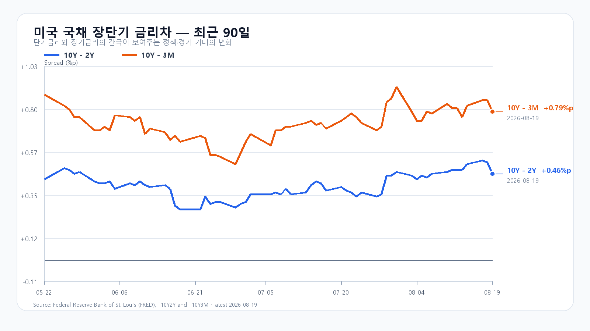

오늘의 한 문장
SK하이닉스의 대규모 자사주 취득·소각은 전일 급락 뒤 나온 강한 반등 재료입니다. 다만 미국 반도체 약세와 외국인·프로그램 매도가 하루 만에 사라졌다고 볼 수는 없습니다. SK하이닉스가 장전 상승분을 지키고 KOSPI가 6,614.39를 되찾아야 반등의 힘을 확인할 수 있습니다.
2,407만 주를 사서 없앤다
SK하이닉스는 2,407만 주를 오늘부터 11월 19일까지 장내에서 취득하고, 매입이 끝나면 전량 소각할 계획입니다. 8월 18일 종가 166만2,000원을 적용한 예정 금액은 40조43억원입니다. 하루 최대 주문 수량은 240만7,000주입니다.
중요한 것은 금액의 크기만이 아닙니다. 회사가 실제 매수 주체로 들어오고 유통 주식 수를 줄이는 결정입니다. 다만 석 달 동안 진행할 계획을 오늘 하루의 40조원 매수로 읽어서는 안 됩니다. 실제 취득 금액도 주가에 따라 달라집니다.
공시 뒤 SK하이닉스는 장전 NXT에서 1,622,000원(+8.13%)까지 올랐고 삼성전자도 259,500원(+4.85%)를 기록했습니다. 정규장에서는 이 가격대를 지키는지가 첫 시험입니다.
전일 7조원에 가까운 매도가 남긴 흔적
KOSPI는 8월 19일 5.80% 내린 6,471.17에 마쳤습니다. 외국인은 현물을 3조4,726억원, 기관은 1조3,390억원 순매도했습니다. 프로그램 전체 순매도도 3조5,626억원에 달했습니다.
매도는 장 초반에 끝나지 않았습니다. 외국인 현물은 오전 10시 -1조3,893억원에서 오후 2시 -2조5,857억원으로, 프로그램 전체는 -1조2,565억원에서 -2조7,643억원으로 늘었습니다. 오늘 반등이 오래가려면 두 흐름이 먼저 잦아들어야 합니다.
| 항목 | 확정값 | 오늘 기준 |
|---|---|---|
| KOSPI | 6,471.17 | 6,400 방어 · 6,614.39 회복 |
| KODEX 레버리지 | 96,740원 | 94,350원 방어 · 101,205원 회복 |
| 외국인·프로그램 | -3조4,726억 · -3조5,626억원 | 장 초반 매도 둔화 |
| 삼성전자·SK하이닉스 NXT | 259,500원(+4.85%) · 1,622,000원(+8.13%) | 장전 상승분 유지 |
미국 지수는 올랐지만 반도체는 약했다
S&P500은 0.21%, Nasdaq은 0.16% 올랐습니다. 미 재무부가 9월부터 장기물 유동성 지원 바이백 규모를 늘리겠다고 발표한 뒤 장기금리가 내려간 영향이 컸습니다.
반도체는 달랐습니다. SOXX는 2.21%, SMH는 1.55% 내렸습니다. Broadcom은 4.61%, AMD는 3.71%, Nvidia는 0.99%, Micron은 0.39% 하락했습니다. 미국 지수의 소폭 상승만 보고 국내 반도체 전반의 반등을 확정하기 어려운 이유입니다.
SK하이닉스 ADR인 SKHY는 정규장에서 8.88% 내린 뒤 시간외에 2.30% 반등했습니다. 정규장 낙폭에는 이미 끝난 한국장 급락이 섞여 있으므로 오늘 충격으로 다시 더하지 않습니다. 공시 뒤 시간외 반등과 국내 NXT 가격만 새 정보로 봅니다.
DRAM 가격은 주가와 반대로 올랐다
TrendForce가 8월 19일 공개한 DDR5 16Gb 현물 평균은 53.267달러로 1.01% 올랐습니다. DDR4 16Gb는 0.75%, DDR4 8Gb는 0.42% 상승했습니다.
전일 메모리 주가가 급락했어도 현물 가격은 오르고 있습니다. 업황 붕괴보다 주식시장 내 높은 밸류에이션과 수급 충격이 컸다는 뜻입니다. 오늘은 여기에 SK하이닉스의 주주환원이 더해졌지만, 정규장 외국인 수급이 따라와야 주가 반등이 업종 전반으로 이어질 수 있습니다.
장기금리는 내려왔고 유가는 91달러대다
8월 19일 미국 국채금리는 3개월 3.86%, 2년 4.19%, 10년 4.65%, 30년 5.19%였습니다. 10년-2년 금리차는 0.46%포인트, 10년-3개월 금리차는 0.79%포인트입니다.
재무부의 장기물 바이백 확대는 성장주 할인율 부담을 덜었습니다. 반면 7월 FOMC 의사록에서는 물가가 낮아지지 않으면 긴축이 필요하다는 의견과 AI 투자·자산가격 위험이 함께 논의됐습니다. Brent 91.63달러(+0.01%) · WTI 84.49달러(+0.12%, 08:10 KST)이고 달러/원은 1,390.00원입니다. 금리 하락과 원화 강세는 우호적이지만 유가와 매파적 조건은 남아 있습니다.

오늘의 시나리오
KOSPI 6,450~6,750
SK하이닉스가 장전 상승분의 일부를 지키고 KOSPI가 전일 고점 6,614.39를 시험합니다. 외국인·비차익 매도가 둔화하면 6,600선 위 안착을 시도할 수 있습니다.
KOSPI 6,750~7,050
자사주 매입 효과가 메모리주 전반으로 번지고 외국인이 순매수로 돌아섭니다. 6,614.39를 회복한 뒤 6,750 위에서 버텨야 합니다.
KOSPI 6,100~6,450
장전 급등이 시초가 뒤 줄고 외국인·비차익 매도가 재개됩니다. 전일 저가 6,400.81을 되찾지 못하면 변동성이 다시 커집니다.
1차 지지 94,350원 · 기준점 96,740원 · 1차 저항 101,205원 · 강한 회복 107,875원.
전체 장중 경로는 KOSPI 6,000~7,150으로 봅니다. 오늘 대응 점수는 공격 35 · 관망 45 · 방어 20입니다.
오늘 밤에는 고용과 제조업 지표가 나온다
한국시간 오후 9시 30분에 미국 주간 실업수당 청구와 필라델피아 연은 제조업 지수가 발표됩니다. 둘 다 한국장 마감 뒤 일정입니다. 오늘 장중에는 공시를 받은 메모리주의 가격 유지와 외국인·프로그램 수급이 더 직접적인 확인값입니다.